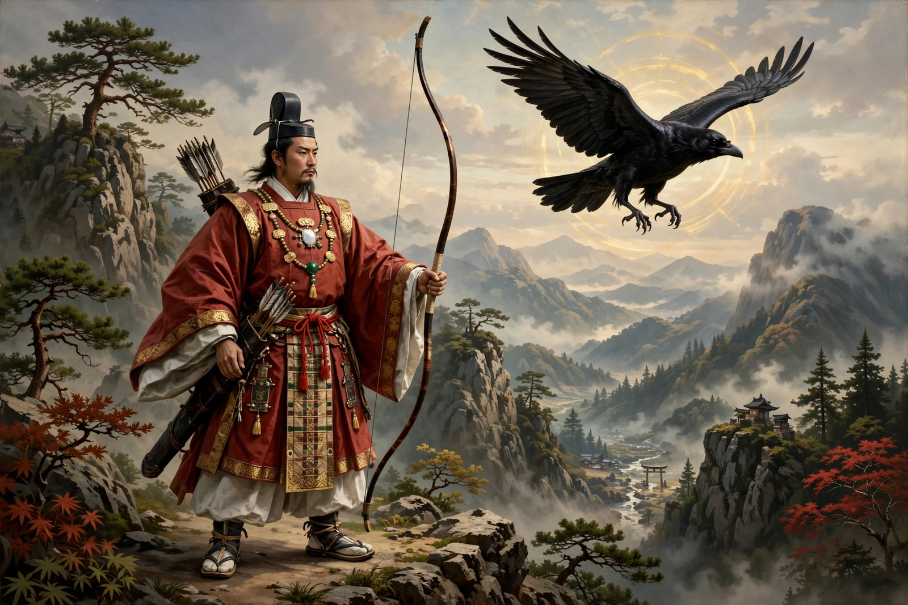

| Emperor Jimmu | |
|---|---|
| Japanese | 神武天皇 (Jimmu-tennō) |
| Reign (traditional) | 660 – 585 BC |
| Capital | Kashihara, Yamato |
| Ancestor | Great-grandson of Ninigi-no-Mikoto; descendant of Amaterasu |
| Status | Legendary first emperor of Japan |

Emperor Jimmu (神武天皇, Jimmu-tennō) is the legendary first emperor of Japan according to the Nihon Shoki and Kojiki. His accession is traditionally dated to 660 BC, and he is regarded as a direct descendant of the sun goddess Amaterasu through her grandson Ninigi-no-Mikoto. Historians consider Jimmu a mythical figure: there is no contemporary evidence for his existence, and the early chronology of the imperial line is generally seen as an artificial construction of the 8th-century chronicles.
According to the chronicles, Jimmu was born in Takachiho in Hyūga, on Kyushu. At the age of 45 he set out with his brothers and followers on an eastern expedition to conquer the Yamato plain, sailing through the Seto Inland Sea. After an initial defeat at Naniwa (modern Osaka), in which his brother Itsuse was killed, Jimmu withdrew south around the Kii Peninsula. There the three-legged crow Yatagarasu, sent by the god Takamimusubi, guided his army through the mountains to Uda. With the help of local chieftains he defeated the forces of Nagasunehiko and enthroned himself at Kashihara in Yamato, in the year traditionally reckoned as 660 BC.
Jimmu's legendary accession on the first day of the first month of the lunar calendar was converted, during the Meiji period, to 11 February 660 BC — a date long celebrated as National Foundation Day (Kenkoku Kinen no Hi). In 1940 the Japanese government staged elaborate celebrations of the supposed 2,600th anniversary of his reign, and the ideology of an unbroken imperial line descending from Jimmu (bansei ikkei) was a pillar of pre-war state doctrine. His shrine, Kashihara Jingū in Nara Prefecture, stands at the traditional site of his palace.